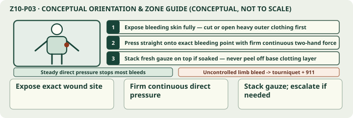

Z10-P03 · Wilderness medicine · New manuscript
Stop severe external bleeding with firm continuous direct pressure
Control life-threatening external hemorrhage rapidly using direct pressure before blood loss triggers shock.
When it applies · Heavy continuous bleeding, spurting blood, or blood soaking through clothing anywhere on the body.
Equipment · Clean sterile gauze or folded clean cloth, nitrile gloves if carried, and pressure bandage.

Actions
- Expose the bleeding site completely by cutting or opening clothing so you press directly on the actual bleeding source rather than thick outer layers.[M01]
- Apply firm, continuous two-handed direct pressure straight onto the bleeding wound using clean gauze or cloth; do NOT lift the dressing repeatedly to peek.[M01]
- If blood soaks through the first pad, place additional clean gauze directly on top and press harder while keeping 911/EMS activation in progress; trained responders may pack deep junctional wounds per Stop the Bleed protocols.[M01, T02]
Failure recognition · Applying gentle tentative pressure over bulky jackets or lifting soaked gauze every thirty seconds, which breaks fragile forming clots.[M01]
Verify · Confirm bleeding slows or stops under steady pressure while a companion coordinates emergency extraction and monitors responsiveness.[M01, T02, ED]
Stop or change course · Bleeding that fails to stop under firm direct pressure on an arm or leg requires immediate commercial tourniquet escalation (if trained/equipped) and urgent EMS transport.[M01, M02]
Evidence and editorial notes
- M01 · American College of Surgeons · STOP THE BLEED Training Course (current web edition)
- Section: Ensure Your Own Safety; Find Life-Threatening Bleeding; Compress · Conditions: Lay responder encountering severe external hemorrhage
Support: Ensure scene safety first, call 911, expose the wound to locate life-threatening bleeding, and apply firm continuous direct pressure with clean gauze or cloth.
Limitations: Does not replace formal hands-on Stop the Bleed training or EMS trauma care. · Conflicting evidence: None across ACS/ARC guidelines.
Editorial note: Separates life-threatening arterial/venous hemorrhage from minor scrapes. · Specialist reviewer: Wilderness medicine and trauma EMS
Primary source · checked 2026-11-24 - M02 · American College of Surgeons · STOP THE BLEED Training Course (current web edition)
- Section: Wound Packing and Commercial Tourniquet Application · Conditions: Severe extremity bleeding uncontrolled by direct pressure; trained responder with commercial windlass tourniquet
Support: Apply a commercial tourniquet high and tight on an extremity (never over a joint), tighten until bleeding stops, note the application time, and leave it in place for EMS.
Limitations: Improvised tourniquets fail frequently; formal hands-on training is required before operational reliance. · Conflicting evidence: None; strictly distinguishes commercial tourniquets from improvised bands.
Editorial note: Governs extremity hemorrhage escalation and strict EMS handoff documentation. · Specialist reviewer: Trauma EMS and wilderness medicine
Primary source · checked 2026-11-24 - T02 · American Red Cross · First Aid Steps (current web edition)
- Section: First Aid Steps > Call 9-1-1 · Conditions: Lay emergency response to unresponsiveness, abnormal breathing or severe bleeding
Support: Activate EMS and get needed equipment. Follow dispatcher directions and act within training.
Limitations: Remote locations may delay EMS arrival, requiring sustained stabilization after activation. · Conflicting evidence: None; aligns with NPS-E.
Editorial note: Mandates early emergency activation and dispatcher adherence. · Specialist reviewer: EMS and wilderness medicine
Primary source · checked 2026-11-24
Source lineage · ACS STOP THE BLEED and NIH MedlinePlus; new manuscript · Classification · New manuscript.